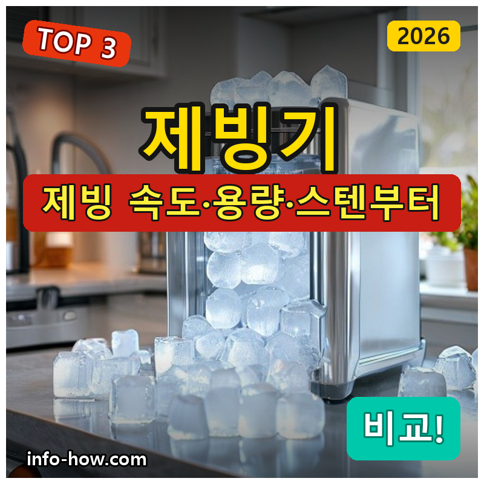
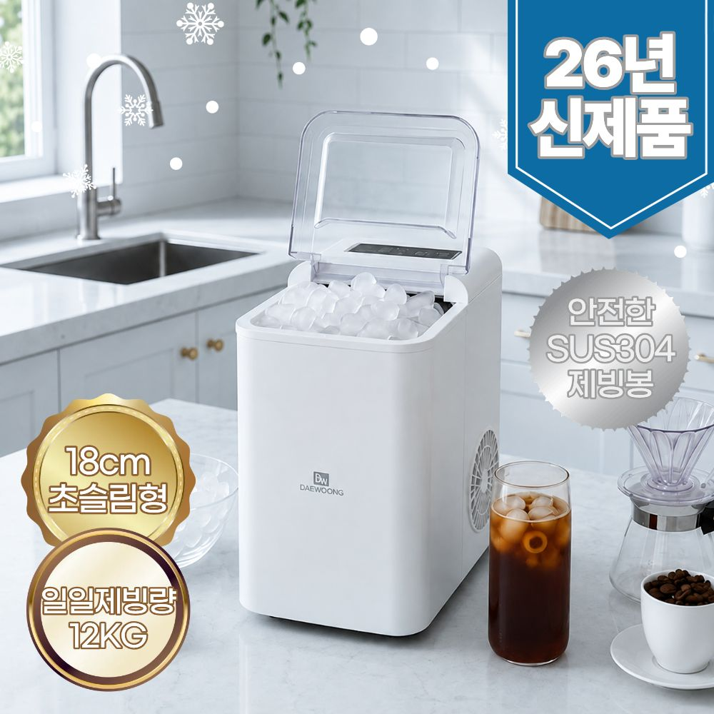
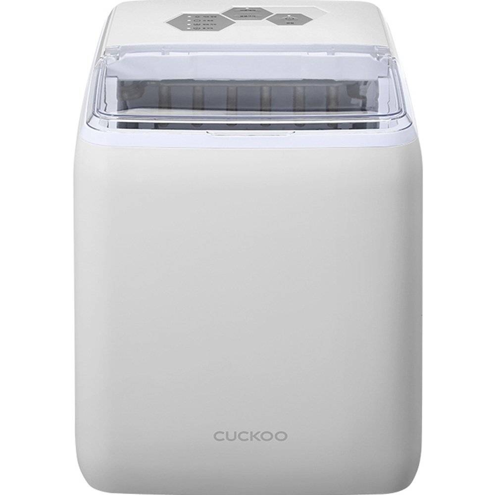
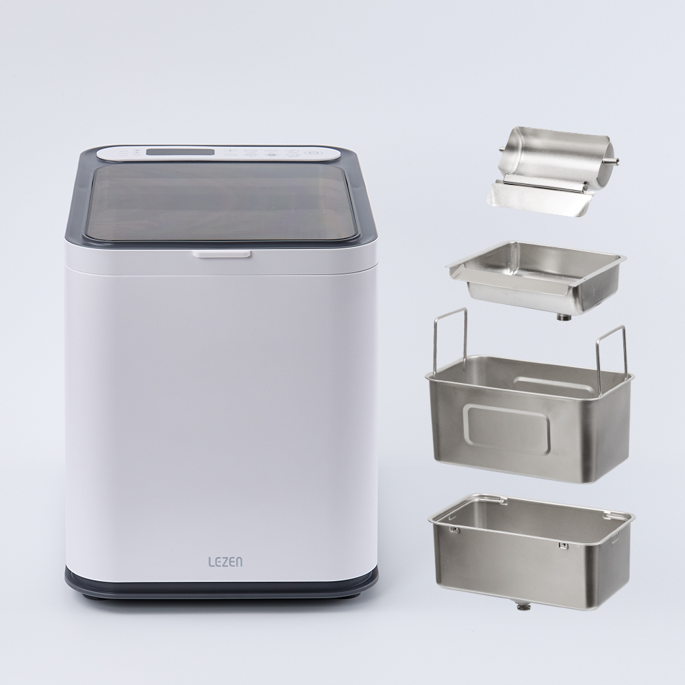

홈 › 제품리뷰 › 주방/조리
제빙기, 슬림 가성비냐 대용량 스텐이냐
작성: 생활서식 모음 · 2026-07-25

파트너스 활동의 일환으로 일정액의 수수료를 지급받습니다
🛒 오늘의 쿠팡 특가 보러가기 →
제빙기, 여름에 얼음 자주 쓰면 사고 싶은데 뭘 살까요?
핵심은 "제빙 속도와 용량, 위생(스텐)" 3대 를
"슬림 급속" "포터블 위생" "대용량 업소급"용도별 정답 까지 담았으니
📋 목차
제빙기, 슬림 가성비냐 대용량 스텐이냐 — 결론 먼저 스펙 비교표: 한눈에 보기 제빙기 고를 때 봐야 할 4가지 가정이냐 업소냐, 뭘 사야 할까? 자주 묻는 질문 (FAQ) 결론: 한 줄 요약
제빙기, 슬림 가성비냐 대용량 스텐이냐 — 결론 먼저
제빙기는 "제빙 속도·용량과 위생(스텐)" 으로 갈려요.대웅 슬림 급속 이 무난합니다. 위생·풀스테인리스 포터블이면 쿠쿠, 대용량 업소급이면 올스텐 22kg입니다.
1 가정·가성비 (가성비 초이스)
가성비

8만원대 슬림 급속
1. 대웅 슬림형 급속 제빙기 (12kg)
8만원대 급속 제빙 슬림형 자리 적게 SUS304 스텐 내부
업소급은 아니어도
추천 대상
가정에서 여름 얼음을 자주 쓰는 분 슬림형으로 자리를 적게 차지하려는 분 가성비로 제빙기를 시작할 분 장점
8만원대로 부담 없이 급속 제빙기를 마련 슬림형이라 주방 자리를 적게 차지 SUS304 스텐 내부라 위생·내구에 유리 단점
이 제품은 가정·가성비용 입니다. 풀스테인리스 포터블이면 2번, 대용량 업소급이면 3번으로 가세요. "가정 급속"이면 가성비 최고예요.
한줄 리뷰
"여름에 집에서 얼음 자주"면 8만원대 슬림 급속으로 충분합니다. 자리도 적게 차지해요. 대용량·업소급이면 2·3번을 보세요.
주요 스펙
제품: 대웅 슬림형 급속 제빙기 (12kg) 용량: 하루 제빙 12kg급 · 슬림형 내부: SUS304 스텐 배송: 로켓배송 가격: 약 85,900원 (변동 가능) ※ 실제 스펙·가격과 차이가 있을 수 있습니다
2 위생·브랜드 (베스트 초이스)
베스트

쿠쿠 풀스테인리스
2. 쿠쿠 풀스테인리스 포터블 제빙기
풀스테인리스로 위생 챙기고
추천 대상
위생·풀스테인리스를 중시하는 분 캠핑·이동 등 포터블로 쓰려는 분 국내 브랜드 쿠쿠를 원하는 분 장점
풀스테인리스라 위생·내구가 좋고 물때 관리가 편함 포터블이라 주방·캠핑 등으로 이동이 쉬움 쿠쿠 브랜드라 A/S·완성도가 안정적 단점
가성비 슬림보다 가격이 있고, 초대용량은 3번이 낫다 가성비 슬림이면 1번, 대용량 업소급이면 3번입니다. 2번은 "풀스테인리스 위생+포터블" 의 실속 구간 — 위생·이동을 챙기는 분에게 무난합니다.
한줄 리뷰
"위생 때문에 풀스테인리스, 캠핑도"면 쿠쿠 포터블이 무난합니다. 위생·이동이 좋아요. 가성비·대용량이면 1·3번을 보세요.
주요 스펙
제품: 쿠쿠 풀스테인리스 포터블 제빙기 소재: 풀스테인리스 · 포터블 강점: 위생 · 브랜드 배송: 로켓배송 가격: 약 210,000원 (변동 가능) ※ 실제 스펙·가격과 차이가 있을 수 있습니다
3 대용량·업소급 (프리미엄)
프리미엄

올스텐 22kg 대용량
3. 르젠 올스텐 제빙기 (22kg)
하루 22kg 대용량 올스텐 위생·이지클린 가정·업소 겸용
하루 22kg 대용량으로
추천 대상
카페·업소 등 얼음을 많이 쓰는 분 가정에서도 대용량이 필요한 분 올스텐 위생·세척 편의를 원하는 분 장점
하루 22kg 대용량이라 업소·많은 얼음 수요에 여유 올스텐+이지클린이라 위생·세척이 편함 가정·업소 겸용으로 활용도가 넓음 단점
40만원대로 고가·대형이라 자리·전기 부담이 있음 가정 급속이면 1번, 위생 포터블이면 2번이 합리적입니다. 3번은 업소·대용량 얼음 이 필요할 때 값어치가 있습니다.
한줄 리뷰
"카페·업소라 얼음이 많이 필요"하면 22kg 대용량이 여유롭습니다. 올스텐이라 위생도 좋아요. 가정·가성비면 1·2번이 합리적입니다.
주요 스펙
제품: 르젠 올스텐 제빙기 22kg (LP-IM100) 용량: 하루 22kg 대용량 소재: 올스텐 · 이지클린 배송: 로켓배송 가격: 약 438,000원 (변동 가능) ※ 실제 스펙·가격과 차이가 있을 수 있습니다
스펙 비교표: 한눈에 보기
가격·풍량·무게 중 본인에게 중요한 기준부터 보세요. "최고" 표시는 3제품 중 객관적 1위 값입니다.
← 좌우로 스크롤 →
제빙기 고를 때 봐야 할 4가지
속도·용량·위생만 챙겨도 후회를 줄입니다.
1) 제빙 속도·용량 — 얼음 수요
가정: 급속·중용량으로 충분업소·많은 얼음: 하루 20kg급 대용량연속 제빙·저장 용량도 함께 확인 2) 위생(스텐) — 물때 관리
물이 닿는 내부가 스테인리스면 위생·물때 관리에 유리 풀스테인리스·올스텐일수록 위생·내구가 좋음 이지클린 등 세척 편의 기능도 확인 3) 크기·설치 — 자리·급배수
슬림형은 자리를 적게, 대용량은 자리를 차지 급수 방식(물통/직수)·배수 처리 확인 주방 공간·콘센트 위치도 고려 4) 얼음 모양·소음 — 취향·환경
얼음 모양(불릿·큐브 등)이 제품마다 다름 작동 소음이 있을 수 있어 취침·공용 공간이면 확인 얼음 저장 후 녹는 속도(보냉)도 참고 가정이냐 업소냐, 뭘 사야 할까?
얼음 수요와 위생만 정하면 답이 나옵니다.
가정·가성비: 1번 대웅 슬림 → 8만원대위생·포터블: 2번 쿠쿠 풀스텐 → 위생·이동대용량·업소: 3번 르젠 올스텐 22kg → 많은 얼음자주 묻는 질문 (FAQ)
Q1. 가정용 제빙기, 정말 필요할까요? 여름에 얼음을 자주 쓴다면 편리합니다. 냉장고 제빙실이 작거나 얼음이 금방 떨어지는 가정, 홈카페·음료를 즐기는 분에게는 급속으로 얼음을 만들어주는 제빙기가 유용합니다. 다만 얼음을 가끔만 쓴다면 냉장고 제빙이나 얼음틀로 충분할 수 있으니, 얼음 사용 빈도를 기준으로 판단하세요. 여름 한정으로 자주 쓴다면 가성비 슬림형이 실용적입니다.
Q2. 제빙기는 위생 관리가 번거롭지 않나요? 주기적 세척이 필요하지만 스텐 제품은 관리가 편합니다. 물이 순환하는 기기라 물때·곰팡이 방지를 위해 정기적으로 내부를 세척해야 합니다. 물이 닿는 내부가 스테인리스(풀스텐·올스텐)면 물때가 덜 끼고 세척이 쉬우며, 이지클린 기능이 있으면 더 편합니다. 사용하지 않을 때는 물을 비우고 건조해두면 위생적으로 오래 씁니다.
Q3. 제빙 속도는 얼마나 걸리나요? 급속 제품은 보통 몇 분~십여 분 안에 첫 얼음이 나옵니다. 급속 제빙기는 짧은 시간에 얼음을 만들어내 기다림이 적습니다. 다만 한 번에 저장되는 양은 제한적이라, 많은 얼음이 필요하면 저장 용량과 연속 제빙 성능을 봐야 합니다. 업소처럼 대량이 필요하면 하루 제빙량이 큰 대용량 제품이 유리합니다.
Q4. 포터블 제빙기랑 대용량, 뭐가 나은가요? 얼음 수요와 이동성으로 갈립니다. 포터블은 자리를 적게 차지하고 캠핑·이동에 쓸 수 있어 가정·개인용으로 편리합니다. 대용량(업소급)은 하루 제빙량이 많아 카페·많은 얼음이 필요한 곳에 유리하지만 크고 자리를 차지합니다. 가정에서 개인적으로 쓰면 포터블·슬림, 업소나 대량 수요면 대용량을 고르세요.
Q5. 제빙기 물은 어떻게 넣나요? 물통에 직접 붓는 방식이 많습니다. 가정용 포터블·슬림 제빙기는 대부분 물통에 물을 부어 넣으면 자동으로 제빙합니다. 물이 부족하면 알림이 뜨는 제품도 있습니다. 업소용·대용량은 직수(수도 연결) 방식도 있어 물을 계속 채울 필요가 없습니다. 설치 공간과 급배수 방식을 확인하고, 정수나 깨끗한 물을 사용하면 위생에 좋습니다.
결론: 한 줄 요약
1) 대웅 슬림 12kg — 약 85,900원 / 가정·가성비. 8만원대 급속, 슬림 스텐.2) 쿠쿠 풀스테인리스 포터블 — 약 210,000원 / 위생·포터블. 풀스텐+이동.3) 르젠 올스텐 22kg — 약 438,000원 / 대용량·업소. 하루 22kg 올스텐.이 포스팅은 쿠팡 파트너스 활동의 일환으로, 이에 따른 일정액의 수수료를 제공받습니다.